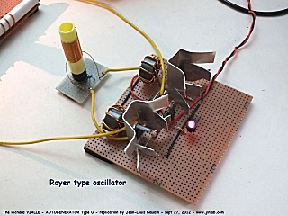
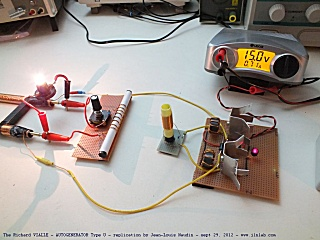

Suite aux essais précédents qui m'ont permis d'affiner la méthode de réglage de l'Autogénérateur en U de Richard Vialle, j'ai transposé mon expérience à l'oscillateur pilote (de type Royer) testé précédement. Dans un premier temps, je n'ai pas pu mettre en évidence une baisse de puissance en charge avec la version 1.1 de l'oscillateur pilote qui utilise le tore de ferrite. Afin de retrouver les bons paramètres pour obtenir cet effet de baisse de puissance en charge, j'ai du réaliser une nouvelle bobine et construire un nouveau circuit accordé. J'ai utilisé le même circuit oscillateur de Royer précédement utilisé (avec les MostFet IRFZ44N), j'ai seulement changé son cicuit LC.
J'ai
utilisé une bobine à air afin de réduire les pertes HF.
La bobine est réalisée sur un tube de plastique (morceau de
stylo surligneur) de 12 mm de diamètre et de 50 mm de long.
L'inductance comporte 40 spires de fil de cuivre émaillé de
4/10 mm. Le condensateur en parallèle est de 4.7 pF.


La fréquence de l'oscillateur pilote qui mesurée aux bornes de
du circuit LC ci-dessus (par rapport à la masse) est de 3.68 MHz.
Sur
le circuit de sortie connecté en parallèle avec la charge, j'ai
augmenté la capacité du condensateur variable de 500 pF en lui
mettant un condensateur de 150 pF en parallèle.
L'inductance reste inchangée (8 spires de 10/10 mm sur une tige
de ferrite (ferroxcube) de 10 mm de diamètre et 120 mm de long)

La charge est une lampe de 6V/100 mA soit environ 0.6 Watt.

A vide (sans la lampe
de charge connectée), le courant continu mesuré est de 0.68 A
et la tension continue de 14.8 V.
La puissance consommée par le circuit à vide est donc
de: 14.8V x 0.68 A = 10.06 watts (ci-dessous)


En
charge (avec la lampe de charge connectée), le courant continu
mesuré est de 0.56 A et la tension continue de 14.8 V.
La puissance consommée par le circuit à vide est donc
de: 14.8V x 0.56 A = 8.29 watts (ci-dessous)

Lorsque la lampe de charge de 0.6 W est connectée, on observe une chute de la puissance deltaP de l'alimentation de l'autogénérateur en U de:
deltaP = Puissance en charge - Puissance à vide = 8.29 - 10.06 = -1.77W
Voici
une
vidéo de l'expérience:
Cette expérience tend à confirmer une fois de plus la théorie et l'expérience de Richard Vialle...

Cliquez ici pour la suite des tests
retour à la page sommaire du projet